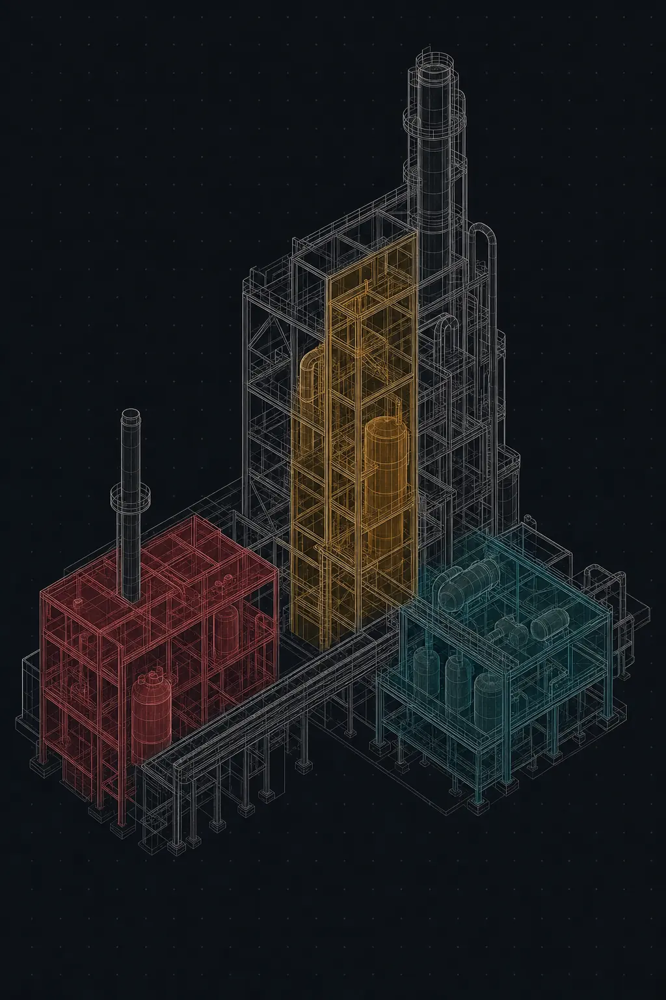

VissRadPCS
Project controls
Completions, field progress, earned value, cost control and forecasting for one project per file. Rule-of-credit progress, shift entry, PF and CPI, five EAC methods and a contingency drawdown register.
Wisdom in decision making
VissRad is an integrated suite of project controls, commissioning, work packaging and finance applications for industrial capital projects — where progress, cost, certification and payment stay tied to one another instead of drifting apart in eleven spreadsheets.
The problem
Every discipline keeps its own version of the truth. The schedule says one thing, the field says another, the cost report is a month behind, and the invoice gets approved because nobody could contradict it in time.
Subcontractor claims arrive as a percentage on a cover sheet. Without rule-of-credit steps and shift-level quantities behind them, there is no defensible number to argue with.
Commitments sit in procurement, actuals sit in finance, and the forecast sits in a workbook on one engineer's laptop. Reconciling them is a monthly archaeology exercise.
Systemisation, ITRs, punch and certificates are managed apart from construction progress — so completion status never informs retention, billing or the forecast.
What integration buys you
A subcontractor submits a progress claim at 62% complete. In VissRadPCS the same scope is carrying 54% of field-certified progress, built from weighted rule-of-credit steps and shift-by-shift quantity entries.
Because VissRadARAP verifies claims against PCS field data through the Link exchange layer, the eight-point gap surfaces in the approval queue instead of after payment — with the certified evidence attached.
Scenario from the VissRad Suite demonstration dataset.
A certificate is not paperwork. It is the moment money is allowed to move.
VissRad design principle
The suite
Each application is installed, licensed and run on its own — a cost engineer never has to open the payables system to do their job. They exchange business documents through Link, so the numbers agree.
Project controls
Completions, field progress, earned value, cost control and forecasting for one project per file. Rule-of-credit progress, shift entry, PF and CPI, five EAC methods and a contingency drawdown register.
Startup & commissioning
System, subsystem and tag hierarchy with ITR check sheets, punch lists and test packages, driving a gated certificate ladder from RVC through MCC, RFC, SCC and DCC to HOC.
Cost management
A cost breakdown structure with budget control, commitments, an actuals ledger, change management, forecasting, earned value, cash flow and reports — nine views over one cost engine.
Advanced work packaging
The full CWA → CWP → EWP → IWP hierarchy with a constraint matrix, readiness scoring, an IWP release gate, path of construction, look-ahead and field progress.
Finance core — FI + CO
General ledger, accounts payable and receivable, cost centre accounting and internal orders, driven by a keyboard-first transaction-code command bar with period control, carry-forward and reconciliation.
Payables & receivables
Invoice intake and coding, three-way PO/receipt/invoice matching, progress-claim verification against field data, a role-based approval queue, retention withheld and released on certificate, and payment runs.
Also in the suite
VissRad4D
Visual sequencing
Pairs one P6, CSV or XLSX schedule with one elevation drawing and paints construction status over time. Planned sequence, progress versus plan and forecast views with SPI, finish variance and an S-curve. No 3D model required.
VissRad Link
Document exchange
The outbox/inbox layer that carries eleven business document types between applications, with idempotent resends, a retry ladder and full replay from the hub console.
VissRadEST
Estimating
Discipline takeoff and estimating workbench feeding the control budget — the origin of the whole toolset, built from industrial piping, equipment and construction estimating practice.
VissRadSCH
Scheduling
Schedule data handling for XER, XML, CSV and XLSX sources, feeding activity structure and dates into progress, packaging and 4D sequencing.
VissRadBI
Reporting
Star-schema exports and report packs designed for Power BI modeling, plus direct read-only database connectivity for ad-hoc analysis.
VissRad Computer
AI assistant
A dark-themed research and work assistant that indexes your own PDFs, workbooks, schedules and XER files for offline citation-backed answers, and runs Python over project data.
The connective tissue
VissRad is not one monolith with one database. Each application owns its own data and sends signed business documents to the others through Link — the same way real organizations already work, only without the re-keying.
VissRadPCS
Issues a completion certificate
VissRadARAP
Releases the withheld retention
VissRadARAP
Codes and approves a vendor invoice
VissRadERP
Posts it as an AP document
VissRadERP
Records commitments and actual costs
VissRadPCS
Refreshes the cost report and forecast
11
Business document types on the exchange
3
Transports — folder, HTTP hub, same-machine direct
7
Retry attempts on a backoff ladder before escalation
0
Duplicate postings — idempotency keys make resends safe
VissRad4D
Most 4D tools demand a federated model, a modeling team and a license stack before anyone can see the sequence. VissRad4D asks for one schedule and one elevation drawing.
Draw the regions once, map them to activities, and the drawing colors itself by status over time — planned sequence, progress versus plan, and forecast, with SPI, finish variance, an S-curve and an activity register alongside.

VissRad Computer
A working assistant rather than a chat window. Point it at a folder of specifications, estimating workbooks, schedules and vendor documents, and it builds a local full-text index that answers with the source chunk cited back to the file.
Switch to online mode for web research with citations, or stay fully offline where network tools are hidden and blocked. It runs Python over your data for the estimating and schedule work that a chat interface cannot do.
Deployment
The same applications run in all three shapes. Nothing about the architecture forces you into a hosted subscription to get started.
Single machine
SQLite databases per application, with Link running over a watched folder or a same-machine direct exchange. Suitable for one estimator or one controls engineer.
On premises
PostgreSQL behind the Link hub, with an authenticated REST transport across the site network. Data never leaves your environment.
Cloud
Managed PostgreSQL with a replicated Link hub behind TLS, for joint ventures and multi-office teams working the same capital project.
Primavera P6 is a file-based import, not a live two-way integration. Payment files are generated in NACHA and ISO 20022 formats but are not bank-certified for transmission. Live 3D model translation depends on your own Autodesk platform entitlements. We would rather tell you this on the website than in month three.
Built by practitioners
VissRad is built by Pennington Group Associates, a Houston practice delivering data driven project management and controls. Every screen exists because a live capital project needed it — industrial takeoff, P6 schedule data, earned-value reporting, procurement and payables. We still take that work on directly.